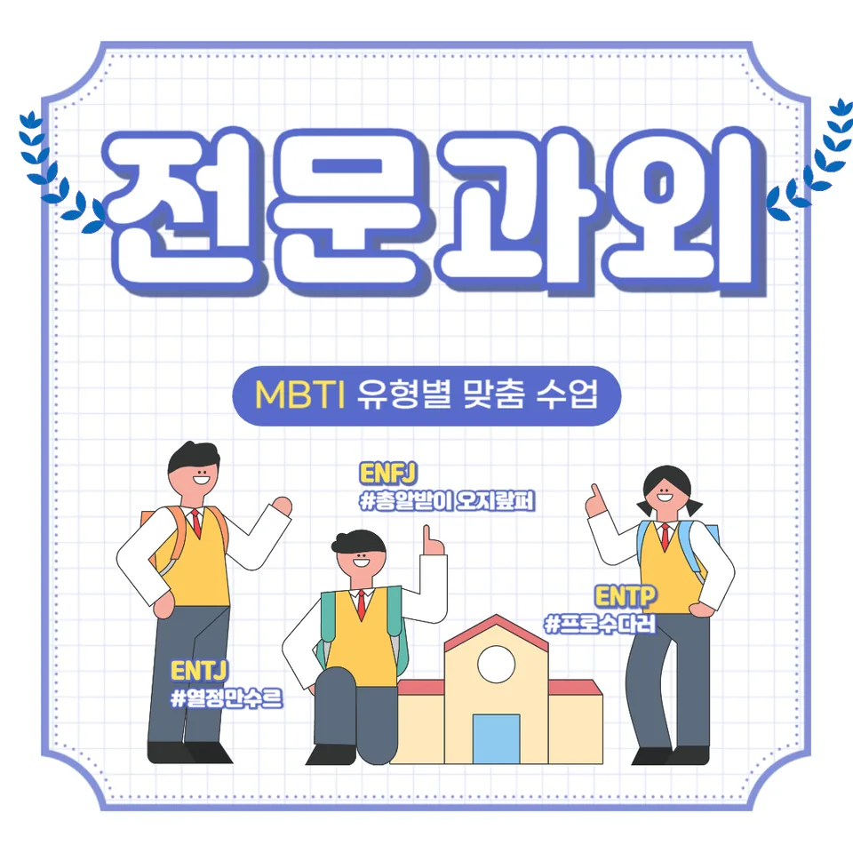

PageType : SUBJECT
URL : /경기도과외/시흥시과외/대야동과외/대야동수학과외/
지역 교육환경이 수학 학습에 미치는 영향
대야동수학과외를 알아보는 학생들은 대체로 학교 수업 속도와 문제 난이도의 간격을 먼저 체감합니다. 지역의 학원 밀도나 스터디 문화가 강할수록 선행을 빨리 하는 분위기가 생기기도 하지만, 그만큼 개념이 굳기 전에 문제만 늘어놓는 흐름이 나타납니다. 반대로 조용한 학습 분위기에서는 성실하게 따라가려는 장점이 있으나, 시험 직전에 정리 습관이 무너지며 불안이 커질 수 있습니다.
학교에서 강조하는 수학 활동이 ‘계산’ 중심으로 굳어 있으면 학생은 수업에서 배운 과정을 설명하기보다 답을 찾는 방식으로 굳어지기 쉽습니다. 이때 대야동수학과외에서는 같은 단원을 다루더라도 수업 이후에 어떤 질문이 남는지부터 점검합니다. 학생이 “왜 그렇게 되는지”를 말로 연결할 수 있을 때 학습 분위기가 안정되고, 그 안정감이 복습으로 이어지는 경우가 많습니다.
학교별 평가 방식과 학습 방향
학교마다 내신 구성과 시험 범위의 반영도가 달라서 공부 방향이 쉽게 흔들립니다. 일부 학교는 서술형이나 사고 과정 비중이 높아 학생이 풀이의 흐름을 글로 정리해야 하고, 다른 학교는 선택형 중심이라 계산 정확도와 속도가 더 중요해집니다. 같은 학생이라도 평가 방식이 달라지면 공부 습관의 우선순위가 달라져, 대야동수학과외처럼 학습 전략을 상황에 맞춰 조정하는 과정이 필요해집니다.
수행평가가 있는 학교에서는 단원 이해를 ‘활동 결과’로 보여주려다 보니, 수업 중에 메모를 남기는 방식이 학생마다 달라집니다. 여기서 중요한 변화는 암기량이 아니라, 수업에서 배운 개념을 생활 맥락이나 조건 해석으로 연결하는 태도입니다. 학생이 발표나 보고 준비를 하면서 스스로 정리하는 경험을 쌓으면, 시험 전에도 오답이 단순 실수가 아닌 학습 포인트로 남습니다.
학생들이 수학을 어려워하는 주요 원인
대부분의 학생은 수학을 ‘어렵다’고 느끼기 시작하는 시기가 있습니다. 대개 중간 난이도가 올라가는 시점 이후, 개념 간 연결이 끊어질 때 막막함이 커집니다. 예를 들면 문제 유형을 바꾸면 갑자기 손이 멈추는 경험이 반복되는데, 이때 원인은 공식의 부족이기보다 조건을 읽는 방식이 흔들리거나, 전 단계에서 형성한 이해가 약한 경우가 많습니다.
학교 수업에서 속도를 따라가려다 보면 학생은 이해보다 기록을 늘리는 쪽으로 기울기도 합니다. 그러다 보니 문제를 풀 때 스스로 점검할 체크 항목이 사라지고, 오답이 생겨도 “다음에 더 빨리 풀자”처럼 감각 조언으로 끝나버립니다. 대야동수학과외에서는 틀린 이유를 ‘계산 실수/개념 오해/조건 누락/검산 부족’처럼 유형화해서, 다음 시도에서 무엇을 바꿔야 하는지 학생 언어로 정리하게 합니다.
학년 변화에 따른 수학 학습의 차이
학년이 올라갈수록 수학의 부담은 단순히 양이 늘어나는 형태로만 오지 않습니다. 학생이 개념을 떠올리는 시간, 문제 조건을 구조화하는 과정, 풀이를 마무리하며 확인하는 습관까지 함께 요구됩니다. 특히 상위 학년으로 갈수록 “풀 수는 있는데 왜 틀렸는지”를 설명해야 하므로, 사고력과 문제 해결의 연결이 더 중요해집니다.
대야동수학과외를 선택한 학생들 중에는 이전 학년까지는 성실히 공부했지만, 시험이 가까워지면 복습이 줄어드는 패턴을 가진 경우가 있습니다. 이 변화가 누적되면 단원 간 연결이 흔들리며, 새로운 유형에서 전 단계의 개념을 다시 찾느라 시간을 잃습니다. 그래서 학습 부담이 커질수록 공부 습관도 ‘한 번에 많이’가 아니라 ‘짧게 점검하며 이어가기’로 바뀌어야 합니다.
꾸준한 학습이 실력으로 이어지는 과정
수학 학습에서 자신감은 한 번의 높은 점수에서만 생기지 않습니다. 학생이 매주 학습 계획을 지키며, 복습이 실제 이해의 형태로 남아 있을 때 자연스럽게 생깁니다. 대야동수학과외에서는 계획을 거창하게 만들기보다, 시험과 학교 수업 흐름에 맞춰 “오늘 끝낸 것을 내일 다시 보기” 같은 짧은 고리를 설계합니다.
학생이 자기주도학습을 시작할 때 흔한 어려움은 무엇을 공부했다고 말할 수 있어야 한다는 점입니다. 문제를 많이 풀었다는 사실만 남으면, 오답이 줄어도 이유를 모른 채 다음 단계로 넘어갑니다. 반대로 학습이 누적될수록 학생은 스스로 개념을 재구성하고, 복습을 통해 같은 실수가 반복되지 않는 지점을 찾게 됩니다. 이 과정에서 공부습관이 안정되면서 사고력이 확장됩니다.
문제 해결력을 키우는 학습 습관
대야동수학과외에서 강조하는 핵심은 풀이 속도가 아니라 문제를 다루는 태도입니다. 학생이 문제를 만나면 먼저 조건을 정리하고, 필요한 개념이 무엇인지 떠올린 뒤, 해결의 첫 문장을 스스로 만들 수 있어야 합니다. 이때 문제 해결은 ‘정답까지의 경로’가 아니라 ‘과정을 확인하는 습관’으로 자리 잡습니다.
시험 직전에는 시간 배분을 바꾸는 변화가 생깁니다. 어떤 학생은 끝까지 밀도 있게 풀려고 해서 시간이 부족해지고, 어떤 학생은 빨리 넘어가다 보니 검산을 건너뛰며 오답을 만듭니다. 해결력은 이러한 패턴을 점검하면서 성장합니다. 학생이 스스로 체크리스트를 만들고, 풀이 중간에 조건 해석이 맞는지 확인하면 문제 해결 경험이 쌓여갑니다.
복습과 학습 관리가 중요한 이유
복습은 단순히 문제를 다시 푸는 일이 아니라 학습 관리의 일부입니다. 학교 시험이 끝나면 학생이 오답을 ‘정리했으니 됐다’고 생각하는 순간이 오는데, 그때 실수 유형이 다시 나타나기 쉽습니다. 대야동수학과외에서는 오답을 다시 풀 때 시간을 늘리기보다, 오답의 원인을 분류하고 같은 실수를 줄이는 반복을 설계합니다.
복습의 효과가 나타나는 학생은 시험 기간에도 학습 흐름이 끊기지 않습니다. 시험 전에는 새로운 문제만 늘어나는 경향이 있는데, 이 시기에는 복습 시간을 확보하지 않으면 개념이 무너집니다. 그래서 학생이 공부습관을 유지하는 방식이 중요해지고, 짧은 복습이 누적되면 내신 준비도 더 안정적으로 이어집니다.
수학 학습에서 확인해야 할 핵심 요소
수학에서 성장을 가늠할 때는 정답 개수보다 관찰 가능한 요소를 확인하는 편이 좋습니다. 예를 들어 학생이 학교 수업 내용을 자신의 말로 다시 설명하는지, 문제를 풀 때 어떤 순서로 생각을 옮기는지, 오답이 생겼을 때 다음 행동을 정하는지 같은 지점이 핵심입니다. 대야동수학과외에서는 이런 핵심 요소가 학생마다 어떻게 다른지부터 점검해 학습 방향을 조정합니다.
- 학교 수업과 시험 범위에 맞는 학습 계획을 세우고 있는지 확인합니다.
- 개념을 암기하는 데 그치지 않고 문제 해결 과정에 활용하고 있는지 점검합니다.
- 틀린 문제를 다시 풀어보며 실수의 원인을 꾸준히 분석합니다.
- 단기 성과보다 지속적인 복습과 학습 습관을 유지하고 있는지 살펴봅니다.
지역별 학습 문화와 학생 성장 속도
지역별 교육 환경은 학습 문화로 나타나며, 그 문화는 학생 성장 속도에도 영향을 줍니다. 어떤 학생은 스터디나 발표가 잦은 분위기에서 사고력이 빨리 확장되고, 또 어떤 학생은 개인 학습 중심에서 안정적으로 복습이 자리 잡습니다. 대야동수학과외에서는 한 가지 방식만 정답처럼 밀기보다, 학생의 성향에 맞춰 학교와 가정에서 이어지는 학습 환경을 연결합니다.
또한 학생마다 성장 속도는 다릅니다. 개념 이해가 빠른 학생도 문제 해결에서 멈칫할 수 있고, 계산 정확도가 안정적이어도 검산을 잘 하지 못해 오답이 생길 수 있습니다. 이런 차이를 인정하고 학습 과정에서 확인해야 할 핵심 요소를 꾸준히 점검하면, 학습이 흔들려도 다시 회복하는 힘이 생깁니다. 결국 공부습관이 안정되면 시험 기간에도 패턴이 무너지지 않고 내신과 수행평가 준비가 이어집니다.
자주 묻는 질문
대야동수학과외는 언제부터 시작하는 것이 좋을까요?
학생이 수학이 막히는 구간이 처음 나타날 때가 시작 신호입니다. 단원 간 연결이 끊어지는 순간, 오답이 반복되는 순간, 내신 대비가 시작되는 시기에 공부 습관이 흔들리면 준비 타이밍을 앞당기는 편이 유리합니다.
학교 내신과 수행평가는 어떻게 함께 대비해야 할까요?
내신 범위에 맞춘 반복 복습과, 수행평가에서 요구하는 이해 표현 방식을 동시에 챙기는 방식이 효과적입니다. 수업에서 배운 개념이 어떤 방식으로 평가로 이어지는지 먼저 파악하면 학습 방향이 정리됩니다.
기본 개념이 부족한 학생도 따라갈 수 있을까요?
가능합니다. 다만 개념을 다시 ‘처음부터’만 다루기보다, 학생이 막히는 유형에서 어떤 연결이 빠졌는지부터 찾아 복구해야 합니다. 그 과정이 잡히면 시험 문제에서도 사고 흐름이 다시 살아납니다.
오답은 어떻게 관리하면 좋을까요?
틀린 문제를 모으는 것보다, 오답의 원인을 분류하고 다음 시도에서 바꿔야 할 행동을 정하는 쪽이 중요합니다. 같은 실수가 반복되지 않도록 복습의 목적을 명확히 하면 오답이 학습 데이터가 됩니다.
자기주도학습을 시작할 때 가장 먼저 바뀌어야 할 점은 무엇인가요?
계획의 크기가 아니라 점검의 습관입니다. 학생이 오늘 공부가 무엇을 이해했는지, 무엇이 남았는지 말할 수 있어야 학습이 이어집니다. 대야동수학과외에서도 이런 점검 흐름을 먼저 잡는 경우가 많습니다.
